БЛОК АВТОМАТИЧЕСКОЙ ТРАНСМИССИИ > ПОВТОРНАЯ СБОРКА |
| 1. РАСПОЛОЖЕНИЕ ПОДШИПНИКОВ |
| Метка | Диаметр переднего кольца внутренний / наружный | Диаметр упорного подшипника внутренний / наружный | Диаметр заднего кольца внутренний / наружный |
| А | 28,45 мм (1,12 дюйма)/29,9 - 30,1 мм (1,18 - 1,19 дюйма) | 29,0 - 29,25 мм (1,14 - 1,15 дюйма)/50,04 - 50,34 мм (1,97 - 1,98 дюйма) | - |
| B | 33,0 - 33,25 мм (1,30 - 1,31 дюйма)/49,9 - 50,4 мм (1,96 - 1,98 дюйма) | 31,45 - 31,70 мм (1,24 - 1,25 дюйма)/49,1 - 49,4 мм (1,93 - 1,94 дюйма) | - |
| C | 37,1 - 37,3 мм (1,46 - 1,47 дюйма)/58,70 - 58,95 мм (2,31 - 2,32 дюйма) | 33,75 - 33,85 мм (1,329 - 1,333 дюйма)/49,8 - 50,3 мм (1,96 - 1,98 дюйма) | - |
| D | 36,5 - 37 мм (1,44 - 1,46 дюйма)/50,75 - 50,95 мм (2,00 - 2,01 дюйма) | 33,55 - 33,80 мм (1,32 - 1,33 дюйма)/47,62 - 47,87 мм (1,87 - 1,88 дюйма) | - |
| E | 25,98 мм (1,02 дюйма)/48,87 мм (1,92 дюйма) | 25,94 - 26,07 мм (1,02 - 1,03 дюйма)/46,62 - 46,87 мм (1,84 - 1,85 дюйма) | 26,5 - 27,0 мм (1,04 - 1,06 дюйма)/47,02 мм (1,85 дюйма) |
| F | - | 35 - 35,3 мм (1,38 - 1,39 дюйма)/50,50 - 53,75 мм (2,11 - 2,12 дюйма) | 34 - 34,5 мм (1,34 - 1,36 дюйма)/48,5 - 49 мм (1,91 - 1,93 дюйма) |
| G | 33,55 - 33,80 мм (1,32 - 1,33 дюйма)/47,3 - 47,8 мм (1,86 - 1,88 дюйма) | 35,45 - 35,61 мм (1,396 - 1,402 дюйма)/47,62 - 47,87 мм (1,87 - 1,88 дюйма) | - |
| H | 28,5 мм (1,12 дюйма)/44,2 мм (1,74 дюйма) | 28,5 мм (1,12 дюйма)/44,2 мм (1,74 дюйма) | - |
| I | - | 39,38 мм (1,55 дюйма)/57,94 - 58,36 мм (2,28 - 2,30 дюйма) | - |
| 2. ЗАКРЕПИТЕ КАРТЕР ТРАНСМИССИИ |
Установите картер трансмиссии на приспособление для переборки.
| 3. УСТАНОВИТЕ ПОРШЕНЬ ТОРМОЗНОГО ЦИЛИНДРА ПЕРВОЙ ПЕРЕДАЧИ И ПЕРЕДАЧИ ЗАДНЕГО ХОДА № 1 |
Покройте 2 новых кольцевых уплотнения трансмиссионной жидкостью и установите их на поршень тормозного цилиндра № 1.
| *1 | Поршень тормозного цилиндра первой передачи и передачи заднего хода № 1 |
| *2 | Реактивная втулка |
Покройте новое кольцевое уплотнение трансмиссионной жидкостью и установите его на реактивную втулку.
Установите поршень тормозного цилиндра № 1 на реактивную втулку.
Расположив поршень тормозного цилиндра № 1 снизу (сзади), установите реактивную втулку тормоза и поршень тормозного цилиндра № 1 в картер трансмиссии.
| *1 | Поршень тормозного цилиндра первой передачи и передачи заднего хода № 1 |
| *2 | Реактивная втулка |
| 4. УСТАНОВИТЕ ПОРШЕНЬ ТОРМОЗНОГО ЦИЛИНДРА ПЕРВОЙ ПЕРЕДАЧИ И ПЕРЕДАЧИ ЗАДНЕГО ХОДА № 2 |
Покройте новое кольцевое уплотнение ATF и установите его на поршень тормозного цилиндра.
| 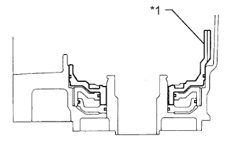 |
Обратив седло пружины поршня вверх (спереди), поместите поршень в картер трансмиссии.
| *1 | Поршень тормозного цилиндра первой передачи и передачи заднего хода № 2 |
| 5. УСТАНОВИТЕ СТЯЖНУЮ ПРУЖИНУ ТОРМОЗА ПЕРВОЙ ПЕРЕДАЧИ И ПЕРЕДАЧИ ЗАДНЕГО ХОДА В СБОРЕ |
Установите стяжную пружину тормоза № 2 на поршень тормозного цилиндра.
Установите SST на стяжную пружину тормоза и сожмите пружину.
С помощью SST установите пружинное стопорное кольцо. Разрез пружинного стопорного кольца не должен совпадать с захватом держателя пружины.
| *1 | Пружинное стопорное кольцо |
| *2 | Захват держателя |
| 6. ПРОВЕРЬТЕ РАБОТУ ПОРШНЯ ТОРМОЗНОГО ЦИЛИНДРА ПЕРВОЙ ПЕРЕДАЧИ И ПЕРЕДАЧИ ЗАДНЕГО ХОДА |
| 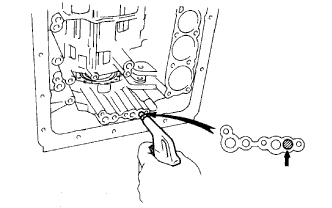 |
Убедитесь, что при подаче сжатого воздуха в картер трансмиссии поршни тормоза первой передачи и передачи заднего хода перемещаются плавно.
| 7. УСТАНОВИТЕ ПЛАСТИНЧАТУЮ ПРУЖИНУ |
 |
| 8. УСТАНОВИТЕ ФЛАНЕЦ КОРОННОЙ ШЕСТЕРНИ ЗАДНЕЙ ПЛАНЕТАРНОЙ ПЕРЕДАЧИ |
 |
Установите фланец коронной шестерни на коронную шестерню задней планетарной передачи.
С помощью отвертки установите пружинное стопорное кольцо.
Смажьте подшипник и кольцо подшипника техническим вазелином и установите их на коронную шестерню задней планетарной передачи.
| Параметр / Устройство | Внутри | Снаружи |
| Подшипник H | 28,5 мм (1,12 дюйма) | 44,2 мм (1,74 дюйма) |
| Кольцо подшипника H | 28,5 мм (1,12 дюйма) | 44,2 мм (1,74 дюйма) |
| *1 | Подшипник H |
| *2 | Кольцо подшипника H |
 |
Покройте упорную шайбу водила планетарной передачи № 2 техническим вазелином.
Установите упорные шайбы с обеих сторон планетарной передачи.
| 9. УСТАНОВИТЕ МУФТУ СВОБОДНОГО ХОДА № 2 |
Установите муфту свободного хода на планетарную передачу.
| *1 | Разрез |
| *2 | Направляющая |
 |
С помощью отвертки установите пружинное стопорное кольцо.
 |
Поворачивая внутреннее кольцо муфты свободного хода против часовой стрелки, установите внутреннее кольцо муфты свободного хода на планетарную передачу.
| 10. ПРОВЕРЬТЕ МУФТУ СВОБОДНОГО ХОДА № 2 |
 |
Удерживая планетарную передачу, поверните внутреннее кольцо муфты свободного хода. Убедитесь, что внутреннее кольцо муфты свободного хода свободно вращается против часовой стрелки и блокируется при вращении по часовой стрелке.
 | Заблокировано |
 | Разблокировано |
| 11. УСТАНОВИТЕ ЗАДНЮЮ ПЛАНЕТАРНУЮ ПЕРЕДАЧУ В СБОРЕ |
 |
Покройте упорную шайбу водила планетарной передачи № 1 техническим вазелином.
Установите упорную шайбу на планетарную передачу.
Установите заднюю планетарную передачу на коронную шестерню задней планетарной передачи.
| 12. УСТАНОВИТЕ МАСЛОУПЛОТНИТЕЛЬНОЕ КОЛЬЦО ВЫХОДНОГО ВАЛА ПЛАНЕТАРНОЙ ПЕРЕДАЧИ |
 |
Покройте маслоуплотнительное кольцо ATF и установите его на выходной вал.
| 13. УСТАНОВИТЕ ВЫХОДНОЙ ВАЛ |
 |
Установите выходной вал во фланец задней планетарной передачи.
| 14. УСТАНОВИТЕ ПОРШЕНЬ ТОРМОЗНОГО ЦИЛИНДРА ВТОРОЙ ПЕРЕДАЧИ |
Покройте 2 новых кольцевых уплотнения ATF и установите их на поршень тормозного цилиндра второй передачи.
Соблюдая осторожность, чтобы не повредить кольцевые уплотнения, вдавите поршень тормозного цилиндра второй передачи в тормозной барабан второй передачи двумя руками.
| 15. УСТАНОВИТЕ СТЯЖНУЮ ПРУЖИНУ ПОРШНЯ ТОРМОЗНОГО ЦИЛИНДРА ВТОРОЙ ПЕРЕДАЧИ В СБОРЕ |
 |
Установите стяжную пружину поршня.
Установите седло стяжной пружины поршня тормозного цилиндра второй передачи.
Установите SST на держатель стяжной пружины и сожмите пружину прессом.
С помощью съемника стопорных колец установите пружинное стопорное кольцо.
| 16. ПРОВЕРЬТЕ ПОРШЕНЬ ТОРМОЗНОГО ЦИЛИНДРА ВТОРОЙ ПЕРЕДАЧИ |
 |
Прерывисто подавая сжатый воздух под низким давлением в тормозной барабан второй передачи, убедитесь, что поршень тормозного цилиндра второй передачи перемещается плавно.
| 17. УСТАНОВИТЕ УПОРНУЮ ШАЙБУ ВОДИЛА ПЛАНЕТАРНОЙ ПЕРЕДАЧИ № 4 |
 |
Смажьте упорную шайбу техническим вазелином и установите ее.
| 18. УСТАНОВИТЕ КОМПЛЕКТ ТОРМОЗНЫХ ДИСКОВ ПЕРВОЙ ПЕРЕДАЧИ И ПЕРЕДАЧИ ЗАДНЕГО ХОДА |
| 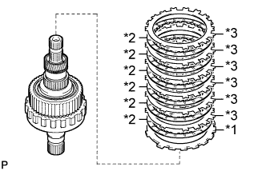 |
Установите фланец скругленным краем вверх.
Установите 6 дисков и 6 пластин.
| *1 | Фланец |
| *2 | Диск |
| *3 | Пластина |
| 19. УСТАНОВИТЕ ВЫХОДНОЙ ВАЛ ВМЕСТЕ С ЗАДНЕЙ ПЛАНЕТАРНОЙ ПЕРЕДАЧЕЙ, МУФТОЙ СВОБОДНОГО ХОДА № 2, КОМПЛЕКТОМ ТОРМОЗНЫХ ДИСКОВ ПЕРВОЙ ПЕРЕДАЧИ И ПЕРЕДАЧИ ЗАДНЕГО ХОДА И ТОРМОЗНЫМ БАРАБАНОМ ВТОРОЙ ПЕРЕДАЧИ |
Смажьте подшипник техническим вазелином и установите его в картер.
| Параметр / Устройство | Внутри | Снаружи |
| Подшипник I | 39,38 мм (1,55 дюйма) | 57,94 - 58,36 мм (2,28 - 2,30 дюйма) |
Совместите зубцы фланца, дисков и пластин.
Установите тормозной барабан 2-й передачи на планетарную передачу таким образом, чтобы пружинное стопорное кольцо было направлено вверх.
Совместите зубцы шестерни планетарной передачи в сборе, обозначенные A на рисунке, со шлицами картера трансмиссии, обозначенными B на рисунке.
 |
Установите собранную планетарную передачу.
Поместите выходной вал на деревянные бруски.
| *1 | Деревянный брусок |
С помощью SST установите пружинное стопорное кольцо.
| 20. ВЫБЕРИТЕ ФЛАНЕЦ ТОРМОЗА ПЕРВОЙ ПЕРЕДАЧИ И ПЕРЕДАЧИ ЗАДНЕГО ХОДА |
С помощью плоского щупа измерьте зазор между пластиной и тормозным барабаном второй передачи.
| Метка | Толщина |
| 55 | 3,94 - 4,06 мм (0,155 - 0,160 дюйма) |
| 54 | 4,14 - 4,26 мм (0,163 - 0,168 дюйма) |
| 53 | 4,34 - 4,46 мм (0,171 - 0,176 дюйма) |
| 52 | 4,54 - 4,66 мм (0,179 - 0,183 дюйма) |
| 51 | 4,74 - 4,86 мм (0,187 - 0,191 дюйма) |
| 50 | 4,92 - 5,08 мм (0,194 - 0,200 дюйма) |
| 66 | 5,10 - 5,30 мм (0,201 - 0,209 дюйма) |
| 67 | 5,30 - 5,50 мм (0,209 - 0,217 дюйма) |
| 21. УСТАНОВИТЕ МУФТУ ПОРШНЯ ТОРМОЗНОГО ЦИЛИНДРА ВТОРОЙ ПЕРЕДАЧИ |
| 22. УСТАНОВИТЕ ПРОКЛАДКУ ТОРМОЗНОГО БАРАБАНА |
Покройте новую прокладку ATF и установите ее.
| 23. УСТАНОВИТЕ МУФТУ СВОБОДНОГО ХОДА № 1 В СБОРЕ |
Установите упорную шайбу на стяжную пружину поршня тормозного цилиндра второй передачи.
Установите муфту свободного хода, как показано на рисунке.
| 24. УСТАНОВИТЕ КОМПЛЕКТ ТОРМОЗНЫХ ДИСКОВ ВТОРОЙ ПЕРЕДАЧИ |
Установите пластину толщиной 1,8 мм (0,0709 дюйма) скругленным краем к дискам.
Установите 5 дисков, 4 пластины толщиной 2,5 мм (0,0984 дюйма) и фланец.
| *1 | Пластина толщиной 1,8 мм (0,0709 дюйма) |
| *2 | Диск |
| *3 | Пластина толщиной 2,5 мм (0,0984 дюйма) |
| *4 | Фланец |
 |
С помощью отвертки установите пружинное стопорное кольцо.
| 25. ПРОВЕРЬТЕ ТОРМОЗ ВТОРОЙ ПЕРЕДАЧИ |
Используя комплект плоских щупов, измерьте зазор между пружинным стопорным кольцом и фланцем.
| 26. УСТАНОВИТЕ ПРУЖИННОЕ СТОПОРНОЕ КОЛЬЦО ВАЛА ПЕРВИЧНОГО БАРАБАНА СОЛНЕЧНОЙ ШЕСТЕРНИ |
 |
С помощью отвертки установите пружинное стопорное кольцо на солнечную шестерню планетарной передачи.
| 27. УСТАНОВИТЕ ПЕРВИЧНЫЙ БАРАБАН СОЛНЕЧНОЙ ШЕСТЕРНИ |
Установите солнечную шестерню планетарной передачи на деревянный брусок или подобный предмет.
Установите первичный барабан на солнечную шестерню планетарной передачи.
С помощью съемника стопорных колец установите пружинное стопорное кольцо.
| 28. УСТАНОВИТЕ МАСЛОУПЛОТНИТЕЛЬНОЕ КОЛЬЦО ВАЛА СОЛНЕЧНОЙ ШЕСТЕРНИ |
| 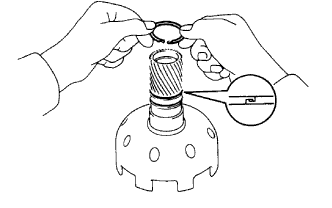 |
Покройте 2 маслоуплотнительных кольца трансмиссионной жидкостью.
Установите 2 маслоуплотнительных кольца на солнечную шестерню планетарной передачи.
| 29. УСТАНОВИТЕ УПОРНУЮ ШАЙБУ МУФТЫ СВОБОДНОГО ХОДА № 1 |
 |
| 30. УСТАНОВИТЕ СОЛНЕЧНУЮ ШЕСТЕРНЮ ПЛАНЕТАРНОЙ ПЕРЕДАЧИ В СБОРЕ С ПЕРВИЧНЫМ БАРАБАНОМ СОЛНЕЧНОЙ ШЕСТЕРНИ |
Поворачивая солнечную шестерню по часовой стрелке, установите ее на муфту свободного хода.
| 31. УСТАНОВИТЕ ПЕРЕДНЮЮ ПЛАНЕТАРНУЮ ПЕРЕДАЧУ В СБОРЕ |
Смажьте подшипник и кольцо подшипника техническим вазелином и установите их на шестерню планетарной передачи.
| Параметр / Устройство | Внутри | Снаружи |
| Кольцо подшипника G | 33,55 - 33,80 мм (1,32 - 1,33 дюйма) | 47,3 - 47,8 мм (1,86 - 1,88 дюйма) |
| Подшипник G | 35,45 - 35,61 мм (1,396 - 1,402 дюйма) | 47,62 - 47,87 мм (1,87 - 1,88 дюйма) |
| *1 | Кольцо подшипника G |
| *2 | Подшипник G |
 |
Установите шестерню планетарной передачи на первичный барабан солнечной шестерни.
| 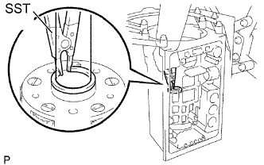 |
С помощью SST установите пружинное стопорное кольцо.
Удалите деревянные бруски из под выходного вала.
Смажьте кольцо подшипника техническим вазелином и установите его на шестерню планетарной передачи.
| Параметр / Устройство | Внутри | Снаружи |
| Кольцо подшипника F | 34 - 34,5 мм (1,34 - 1,36 дюйма) | 48,5 - 49 мм (1,91 - 1,93 дюйма) |
| 32. УСТАНОВИТЕ ЛЕНТУ ТОРМОЗА ОБЕСПЕЧЕНИЯ РЕЖИМА ТОРМОЖЕНИЯ ДВИГАТЕЛЕМ НА ВТОРОЙ ПЕРЕДАЧЕ В СБОРЕ |
Установите ленту тормоза в картер.
Установите штифт на ленту тормоза, как показано на рисунке.
Установите разрезное уплотнение на штифт.
| 33. УСТАНОВИТЕ МАСЛОУПЛОТНИТЕЛЬНОЕ КОЛЬЦО ПЕРВИЧНОГО ВАЛА |
Покройте 3 маслоуплотнительных кольца трансмиссионной жидкостью.
Сожмите концы 3 маслоуплотнительных колец вместе и установите их в канавку барабана муфты переднего хода.
| 34. УСТАНОВИТЕ ПОРШЕНЬ ПЕРЕДНЕЙ МУФТЫ В СБОРЕ |
Покройте 2 новых кольцевых уплотнения трансмиссионной жидкостью и установите их на поршень муфты переднего хода.
| *1 | Кольцевое уплотнение |
Покройте новое кольцевое уплотнение трансмиссионной жидкостью и установите его в барабан муфты переднего хода.
Запрессуйте поршень муфты в барабан муфты переднего хода обеими руками.
| 35. УСТАНОВИТЕ СТЯЖНУЮ ПРУЖИНУ МУФТЫ ПЕРЕДНЕГО ХОДА В СБОРЕ |
Установите стяжную пружину поршня.
 |
Установите SST на держатель пружины, сожмите пружину прессом и установите пружинное стопорное кольцо.
| 36. УСТАНОВИТЕ КОМПЛЕКТ ДИСКОВ МУФТЫ ПЕРЕДНЕГО ХОДА |
| 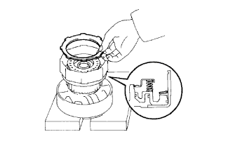 |
Установите пружинящий диск.
Установите 6 пластины, 6 диска и фланец.
| *1 | Пластина |
| *2 | Диск |
| *3 | Фланец |
 |
С помощью отвертки установите пружинное стопорное кольцо.
| 37. ВЫБЕРИТЕ ФЛАНЕЦ МУФТЫ ПЕРЕДНЕГО ХОДА |
Подавая сжатый воздух (под давлением 392 кПа, (4,0 кгс/см2, 57 фунтов на кв. дюйм)), с помощью SST и индикатора часового типа измерьте расстояние перемещения (A) фланца муфты на противоположных сторонах диаметра.
| Метка | Толщина |
| 90 | 2,95 - 3,05 мм (0,116 - 0,120 дюйма) |
| 91 | 3,15 - 3,25 мм (0,124 - 0,128 дюйма) |
| 92 | 3,35 - 3,45 мм (0,132 - 0,136 дюйма) |
| 93 | 3,55 - 3,65 мм (0,140 - 0,144 дюйма) |
| 94 | 3,75 - 3,85 мм (0,148 - 0,152 дюйма) |
| 95 | 3,95 - 4,05 мм (0,156 - 0,159 дюйма) |
| 96 | 4,15 - 4,25 мм (0,163 - 0,167 дюйма) |
| 97 | 4,35 - 4,45 мм (0,171 - 0,175 дюйма) |
| 38. УСТАНОВИТЕ ПОРШЕНЬ МУФТЫ ПРЯМОЙ ПЕРЕДАЧИ В СБОРЕ |
Покройте 2 новых кольцевых уплотнения трансмиссионной жидкостью и установите их на поршень муфты прямой передачи.
| *1 | Кольцевое уплотнение |
Запрессуйте поршень муфты в барабан муфты обеими руками.
| 39. УСТАНОВИТЕ СТЯЖНУЮ ПРУЖИНУ МУФТЫ ПРЯМОЙ ПЕРЕДАЧИ В СБОРЕ |
Установите SST на держатель стяжной пружины и сожмите пружину прессом.
С помощью SST установите пружинное стопорное кольцо.
| 40. УСТАНОВИТЕ КОМПЛЕКТ ДИСКОВ МУФТЫ ПРЯМОЙ ПЕРЕДАЧИ |
| 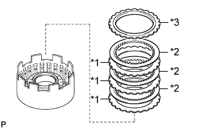 |
Установите 3 пластин и 3 дисков.
Установите фланец торцом вниз.
| *1 | Пластина |
| *2 | Диск |
| *3 | Фланец |
 |
С помощью отвертки установите пружинное стопорное кольцо.
| 41. ВЫБЕРИТЕ ФЛАНЕЦ МУФТЫ ПРЯМОЙ ПЕРЕДАЧИ |
Установите муфту прямой передачи на опору повышающей передачи.
Подавая сжатый воздух (под давлением (186-206 кПа, (1,9-2,1 кгс/см2, 27-30 фунтов на кв. дюйм)), с помощью SST и индикатора часового типа измерьте расстояние перемещения (A) фланца муфты на противоположных сторонах диаметра.
| Метка | Толщина |
| 53 | 3,25-3,35 мм (0,128-0,132 дюйма) |
| 54 | 3,35-3,45 мм (0,132-0,136 дюйма) |
| 55 | 3,45-3,55 мм (0,136-0,140 дюйма) |
| 56 | 3,55-3,65 мм (0,140-0,144 дюйма) |
| 57 | 3,65-3,75 мм (0,144-0,148 дюйма) |
| 58 | 3,75-3,85 мм (0,148-0,152 дюйма) |
| 42. УСТАНОВИТЕ МУФТУ ПРЯМОЙ ПЕРЕДАЧИ В СБОРЕ |
Установите подшипник и упорную шайбу на муфту переднего хода.
| Параметр / Устройство | Внутри | Снаружи |
| Подшипник D | 33,55 - 33,80 мм (1,32 - 1,33 дюйма) | 47,62 - 47,87 мм (1,87 - 1,88 дюйма) |
| *1 | Подшипник D |
| *2 | Упорная шайба |
Установите муфту прямой передачи на муфту переднего хода.
| 43. УСТАНОВИТЕ КОРОННУЮ ШЕСТЕРНЮ ПЕРЕДНЕЙ ПЛАНЕТАРНОЙ ПЕРЕДАЧИ В СБОРЕ |
| 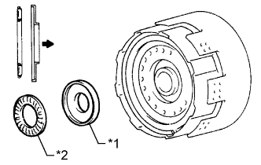 |
Смажьте кольцо подшипника и подшипник техническим вазелином и установите их на муфту переднего хода.
| Параметр / Устройство | Внутри | Снаружи |
| Кольцо подшипника E | 25,98 мм (1,02 дюйма) | 48,87 мм (1,92 дюйма) |
| Подшипник E | 25,94 - 26,07 мм (1,02 - 1,03 дюйма) | 46,62 - 46,87 мм (1,84 - 1,85 дюйма) |
| *1 | Кольцо подшипника E |
| *2 | Подшипник E |
Смажьте кольцо подшипника техническим вазелином и установите его на коронную шестерню передней планетарной передачи.
| Параметр / Устройство | Внутри | Снаружи |
| Кольцо подшипника E | 26,5 - 27,0 мм (1,04 - 1,06 дюйма) | 47,02 мм (1,85 дюйма) |
Совместите зубцы дисков в муфте переднего хода.
 |
Совместите шлицы коронной шестерни планетарной передачи с зубцами дисков и установите коронную шестерню планетарной передачи на муфту переднего хода.
| 44. УСТАНОВИТЕ МУФТУ ПРЯМОЙ ПЕРЕДАЧИ В СБОРЕ С МУФТОЙ ПЕРЕДНЕГО ХОДА В СБОРЕ |
Смажьте подшипник техническим вазелином и установите его на коронную шестерню.
| Параметр / Устройство | Внутри | Снаружи |
| Подшипник F | 35 - 35,3 мм (1,38 - 1,39 дюйма) | 50,50 - 53,75 мм (2,11 - 2,12 дюйма) |
| *1 | Подшипник F |
Установите собранную муфту прямой передачи, муфту переднего хода и коронную шестерню передней планетарной передачи в картер трансмиссии.
С помощью штангенциркуля измерьте расстояние между первичным барабаном солнечной шестерни и барабаном муфты прямой передачи, как показано на рисунке.
Смажьте подшипник техническим вазелином и установите его на муфту переднего хода.
| Параметр / Устройство | Внутри | Снаружи |
| Подшипник D | 33,55 - 33,80 мм (1,32 - 1,33 дюйма) | 47,62 - 47,87 мм (1,87 - 1,88 дюйма) |
| 45. УСТАНОВИТЕ ШТОК ПОРШНЯ ТОРМОЗНОГО ЦИЛИНДРА ОБЕСПЕЧЕНИЯ РЕЖИМА ТОРМОЖЕНИЯ ДВИГАТЕЛЕМ НА ВТОРОЙ ПЕРЕДАЧЕ |
Установите плоскую шайбу, пружину сжатия и поршень на шток поршня.
| *1 | Шток поршня |
| *2 | Плоская шайба |
| *3 | Пружина сжатия |
| *4 | Поршень |
С усилием прижмите поршень, чтобы сжать пружину сжатия.
Установите разрезное уплотнение.
| 46. УСТАНОВИТЕ МАСЛОУПЛОТНИТЕЛЬНОЕ КОЛЬЦО ПОРШНЯ ТОРМОЗНОГО ЦИЛИНДРА ОБЕСПЕЧЕНИЯ РЕЖИМА ТОРМОЖЕНИЯ ДВИГАТЕЛЕМ НА ВТОРОЙ ПЕРЕДАЧЕ |
Покройте новое маслоуплотнительное кольцо ATF.
Разведите концы кольца, чтобы установить маслоуплотнительное кольцо в канавку поршня. Затем сожмите концы вместе.
| 47. УСТАНОВИТЕ ПОРШЕНЬ ТОРМОЗНОГО ЦИЛИНДРА ОБЕСПЕЧЕНИЯ РЕЖИМА ТОРМОЖЕНИЯ ДВИГАТЕЛЕМ НА ВТОРОЙ ПЕРЕДАЧЕ В СБОРЕ |
Покройте 2 новых кольцевых уплотнения ATF и установите их на крышку тормоза обеспечения режима торможения двигателем на второй передаче.
Установите пружину, поршень в сборе и крышку в картер.
 |
С помощью SST установите пружинное стопорное кольцо.
| 48. ПРОВЕРЬТЕ ХОД ПОРШНЯ ТОРМОЗНОГО ЦИЛИНДРА ОБЕСПЕЧЕНИЯ РЕЖИМА ТОРМОЖЕНИЯ ДВИГАТЕЛЕМ НА ВТОРОЙ ПЕРЕДАЧЕ |
| 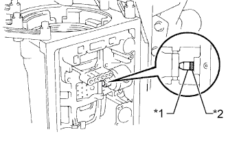 |
С помощью водостойкого карандаша нанесите метку на шток поршня тормозного цилиндра обеспечения режима торможения двигателем на второй передаче, как показано на рисунке.
| *1 | Шток поршня |
| *2 | Метка |
 |
С помощью SST измерьте ход поршня, подавая сжатый воздух (392 кПа, 4,0 кгс/см2, 57 фунтов на кв. дюйм) и прекращая его подачу.
| Метка-прорезь | Длина |
| В отсутствие | 78,3 - 78,5 мм (3,08 - 3,09 дюйма) |
| При наличии | 79,8 - 80,0 мм (3,14 - 3,15 дюйма) |
| 49. УСТАНОВИТЕ МАСЛОУПЛОТНИТЕЛЬНОЕ КОЛЬЦО БАРАБАНА МУФТЫ ПОВЫШАЮЩЕЙ ПЕРЕДАЧИ |
Покройте 2 новых маслоуплотнительных кольца трансмиссионной жидкостью.
Сожмите концы 2 маслоуплотнительных колец вместе и установите их в канавку вала стартера.
 |
Смажьте упорную шайбу техническим вазелином и установите ее на опору повышающей передачи.
| 50. УСТАНОВИТЕ ПОРШЕНЬ ТОРМОЗНОГО ЦИЛИНДРА ПОВЫШАЮЩЕЙ ПЕРЕДАЧИ |
 |
Покройте 2 новых кольцевых уплотнения трансмиссионной жидкостью и установите их на поршень тормоза повышающей передачи.
| *1 | Кольцевое уплотнение |
| 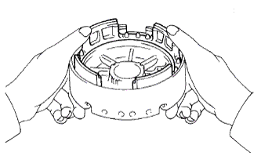 |
Обеими руками вдавите поршень тормозного цилиндра в опору повышающей передачи, чтобы установить его.
| 51. УСТАНОВИТЕ ВОЗВРАТНУЮ ПРУЖИНУ ТОРМОЗА ПОВЫШАЮЩЕЙ ПЕРЕДАЧИ |
Установите стяжную пружину на поршень тормозного цилиндра.
Установите SST на держатель стяжной пружины и сожмите пружину прессом.
С помощью отвертки установите пружинное стопорное кольцо.
| 52. ПРОВЕРЬТЕ РАБОТУ ПОРШНЯ ТОРМОЗНОГО ЦИЛИНДРА ПОВЫШАЮЩЕЙ ПЕРЕДАЧИ |
 |
Установите опору повышающей передачи в сборе на муфту прямой передачи в сборе.
 |
Подайте сжатый воздух (392 кПа, (4 кгс/см2, 57 фунтов на кв. дюйм)) в канал для масла и убедитесь, что поршень тормозного цилиндра повышающей передачи перемещается свободно.
| 53. УСТАНОВИТЕ ТОРМОЗ ПОВЫШАЮЩЕЙ ПЕРЕДАЧИ В СБОРЕ |
Смажьте подшипник и кольцо подшипника техническим вазелином и установите их на тормоз повышающей передачи в сборе.
| Параметр / Устройство | Внутри | Снаружи |
| Подшипник C | 33,75 - 33,85 мм (1,329 - 1,333 дюйма) | 49,8 - 50,3 мм (1,96 - 1,98 дюйма) |
| Кольцо подшипника D | 36,5 - 37 мм (1,44 - 1,46 дюйма) | 50,75 - 50,95 мм (2,00 - 2,01 дюйма) |
| *1 | Подшипник C |
| *2 | Кольцо подшипника D |
Удостоверьтесь, что упорная шайба установлена правильно.
С помощью 2 болтов SST направьте болт и отверстия для масла тормоза повышающей передачи в сборе в сторону корпуса клапанов в сборе и совместите их с болтовыми отверстиями картера трансмиссии. Затем установите тормоз повышающей передачи в сборе.
Временно заверните 2 болта.
С помощью SST установите пружинное стопорное кольцо.
Затяните 2 болта.
| 54. ПРОВЕРЬТЕ ОСЕВОЙ ЛЮФТ ВЫХОДНОГО ВАЛА |
 |
С помощью индикатора часового типа измерьте осевой люфт выходного вала, перемещая его рукой.
Убедитесь, что выходной вал вращается плавно.
| 55. УСТАНОВИТЕ КОМПЛЕКТ ДИСКОВ ТОРМОЗА ПОВЫШАЮЩЕЙ ПЕРЕДАЧИ |
Установите 3 пластины, 3 диска и фланец.
| *1 | Пластина |
| *2 | Диск |
| *2 | Фланец |
С помощью отвертки установите пружинное стопорное кольцо.
| 56. ВЫБЕРИТЕ ФЛАНЕЦ ТОРМОЗА ПОВЫШАЮЩЕЙ ПЕРЕДАЧИ |
Установите SST и индикатор часового типа на поршень тормозного цилиндра повышающей передачи.
Измерьте ход, подавая сжатый воздух (392 кПа, (4,0 кгс/см2, 57 фунтов на кв. дюйм)) и прекращая его подачу.
| Метка | Толщина |
| 33 | 3,25 - 3,35 мм (0,128 - 0,132 дюйма) |
| 35 | 3,45-3,55 мм (0,136-0,140 дюйма) |
| 36 | 3,55-3,65 мм (0,140-0,144 дюйма) |
| 37 | 3,65-3,75 мм (0,144-0,148 дюйма) |
| 38 | 3,75-3,85 мм (0,148-0,152 дюйма) |
| 39 | 3,85-3,95 мм (0,152-0,156 дюйма) |
| 40 | 3,95-4,05 мм (0,156-0,159 дюйма) |
| 57. УСТАНОВИТЕ ФЛАНЕЦ КОРОННОЙ ШЕСТЕРНИ ПОВЫШАЮЩЕЙ ПЛАНЕТАРНОЙ ПЕРЕДАЧИ |
 |
Установите фланец коронной шестерни на коронную шестерню повышающей планетарной передачи.
С помощью отвертки установите пружинное стопорное кольцо.
| 58. УСТАНОВИТЕ КОРОННУЮ ШЕСТЕРНЮ ПОВЫШАЮЩЕЙ ПЛАНЕТАРНОЙ ПЕРЕДАЧИ |
Смажьте кольцо подшипника техническим вазелином и установите его на фланец коронной шестерни повышающей планетарной передачи.
| Параметр / Устройство | Внутри | Снаружи |
| Кольцо подшипника C | 37,1 - 37,3 мм (1,46 - 1,47 дюйма) | 58,70 - 58,95 мм (2,31 - 2,32 дюйма) |
| *1 | Кольцо подшипника C |
| 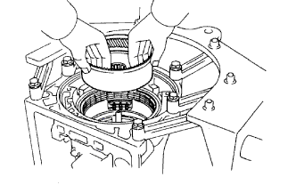 |
Установите коронную шестерню.
| 59. УСТАНОВИТЕ УПОРНУЮ ШАЙБУ ШЕСТЕРНИ ПОВЫШАЮЩЕЙ ПЛАНЕТАРНОЙ ПЕРЕДАЧИ № 3 |
Установите упорную шайбу на шестерню повышающей планетарной передачи таким образом, чтобы канавки были направлены вверх.
| 60. УСТАНОВИТЕ МУФТУ СВОБОДНОГО ХОДА ПОВЫШАЮЩЕЙ ПЕРЕДАЧИ |
Установите 2 держателя на муфту свободного хода.
Установите муфту свободного хода на наружное кольцо таким образом, чтобы фланец муфты свободного хода был направлен вверх.
| *1 | Фланец |
Установите муфту свободного хода повышающей передачи и наружное кольцо на шестерню повышающей планетарной передачи.
| 61. УСТАНОВИТЕ ПРИЖИМНУЮ ПЛАСТИНУ ПОВЫШАЮЩЕЙ ПЕРЕДАЧИ |
Установите прижимную пластину.
 |
С помощью отвертки установите пружинное стопорное кольцо.
| 62. ПРОВЕРЬТЕ МУФТУ СВОБОДНОГО ХОДА ПОВЫШАЮЩЕЙ ПЕРЕДАЧИ |
 |
Удерживая барабан муфты прямой повышающей передачи, поверните первичный вал. Убедитесь, что первичный вал свободно вращается по часовой стрелке и блокируется при вращении против часовой стрелки.
| Заблокировано |
| Разблокировано |
| 63. УСТАНОВИТЕ ПОРШЕНЬ МУФТЫ ПРЯМОЙ ПОВЫШАЮЩЕЙ ПЕРЕДАЧИ В СБОРЕ |
Покройте 2 новых кольцевых уплотнения трансмиссионной жидкостью и установите их на поршень муфты повышающей прямой передачи.
Запрессуйте поршень муфты в барабан муфты обеими руками.
| 64. УСТАНОВИТЕ ВОЗВРАТНУЮ ПРУЖИНУ ТОРМОЗА ПОВЫШАЮЩЕЙ ПЕРЕДАЧИ |
Установите стяжную пружину тормоза повышающей передачи на поршень муфты прямой повышающей передачи.
| 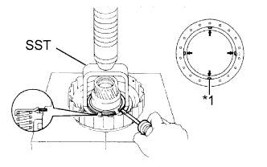 |
Установите SST на держатель стяжной пружины и сожмите пружину прессом.
С помощью отвертки установите пружинное стопорное кольцо.
| *1 | Захват держателя |
| 65. УСТАНОВИТЕ КОМПЛЕКТ ДИСКОВ МУФТЫ ПРЯМОЙ ПОВЫШАЮЩЕЙ ПЕРЕДАЧИ |
Установите 2 пластин и 2 дисков.
| *1 | Пластина |
| *2 | Диск |
Установите фланец торцом вниз.
С помощью отвертки установите пружинное стопорное кольцо.
| 66. ВЫБЕРИТЕ ФЛАНЕЦ МУФТЫ ПОВЫШАЮЩЕЙ ПЕРЕДАЧИ |
Поместите масляный насос на муфту гидротрансформатора, а затем установите барабан муфты прямой повышающей передачи в сборе на масляный насос.
С помощью SST и индикатора часового типа измерьте ход поршня муфты прямой повышающей передачи, подавая сжатый воздух (392 кПа, (4,0 кгс/см2, 57 фунтов на кв. дюйм)) и прекращая его подачу.
| *1 | Виниловая лента |
| Метка | Толщина |
| 21 | 3,05 - 3,15 мм (0,120 - 0,124 дюйма) |
| 20 | 3,15 - 3,25 мм (0,124 - 0,128 дюйма) |
| 19 | 3,25 - 3,35 мм (0,128 - 0,132 дюйма) |
| 18 | 3,35 - 3,45 мм (0,132 - 0,136 дюйма) |
| 17 | 3,45 - 3,55 мм (0,136 - 0,140 дюйма) |
| 16 | 3,55 - 3,65 мм (0,140 - 0,144 дюйма) |
| 67. УСТАНОВИТЕ БАРАБАН МУФТЫ ПРЯМОЙ ПОВЫШАЮЩЕЙ ПЕРЕДАЧИ |
Совместите зубцы дисков в муфте прямой передачи в сборе.
Установите барабан муфты прямой передачи в сборе на повышающую планетарную передачу.
| 68. УСТАНОВИТЕ ШЕСТЕРНЮ ПОВЫШАЮЩЕЙ ПЛАНЕТАРНОЙ ПЕРЕДАЧИ В СБОРЕ С МУФТОЙ ПРЯМОЙ ПЕРЕДАЧИ В СБОРЕ И МУФТОЙ СВОБОДНОГО ХОДА ПОВЫШАЮЩЕЙ ПЕРЕДАЧИ В СБОРЕ |
Смажьте подшипник техническим вазелином и установите его на коронную шестерню.
| Параметр / Устройство | Внутри | Снаружи |
| Подшипник B | 31,45 - 31,70 мм (1,24 - 1,25 дюйма) | 49,1 - 49,4 мм (1,93 - 1,94 дюйма) |
| *1 | Подшипник B |
Смажьте кольцо подшипника техническим вазелином и установите его на шестерню планетарной передачи.
| Параметр / Устройство | Внутри | Снаружи |
| Кольцо подшипника B | 33,0 - 33,25 мм (1,30 - 1,31 дюйма) | 49,9 - 50,4 мм (1,96 - 1,98 дюйма) |
| *1 | Кольцо подшипника B |
Установите шестерню повышающей планетарной передачи с муфтой прямой повышающей передачи и муфтой свободного хода.
| 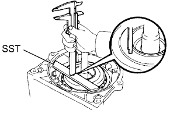 |
Установите SST на картер трансмиссии.
С помощью штангенциркуля измерьте расстояние между верхней поверхностью SST и барабаном муфты.
Смажьте подшипник техническим вазелином и установите его на муфту прямой повышающей передачи.
| Параметр / Устройство | Внутри | Снаружи |
| Подшипник A | 29,0 - 29,25 мм (1,14 - 1,15 дюйма) | 50,04 - 50,34 мм (1,97 - 1,98 дюйма) |
| *1 | Подшипник A |
| 69. УСТАНОВИТЕ МАСЛЯНЫЙ НАСОС В СБОРЕ |
Смажьте кольцо подшипника техническим вазелином и установите его на масляный насос.
| Параметр / Устройство | Внутри | Снаружи |
| Кольцо подшипника A | 28,45 мм (1,12 дюйма) | 29,9 - 30,1 мм (1,18 - 1,19 дюйма) |
| *1 | Кольцо подшипника A |
Покройте новое кольцевое уплотнение ATF и установите его на корпус насоса.
Задвиньте масляный насос на первичный вал, совместите болтовые отверстия масляного насоса в сборе с болтовыми отверстиями картера трансмиссии и закрепите масляный насос.
Удерживая первичный вал, слегка надавите на корпус масляного насоса, чтобы вставить маслоуплотнительные кольца в барабан муфты прямой передачи повышающей передачи.
 |
Заверните 7 болтов.
| 70. ПРОВЕРЬТЕ ВРАЩЕНИЕ ПЕРВИЧНОГО ВАЛА |
Убедитесь, что первичный вал вращается свободно.
| 71. ПРОВЕРЬТЕ РАБОТУ КАЖДОГО ПОРШНЯ |
Подавая сжатый воздух в отверстие для заливки масла, показанное на рисунке, проверьте наличие звука срабатывания.
| *1 | Муфта прямой повышающей передачи (C1) |
| *2 | Муфта прямой передачи (C2) |
| *3 | Муфта переднего хода (C3) |
| *4 | Тормоз повышающей передачи (B1) |
| *5 | Тормоз обеспечения режима торможения двигателем на второй передаче (B2) |
| *6 | Тормоз второй передачи (B3) |
| *7 | Тормоз первой передачи и передачи заднего хода (B4) |
| *8 | Отверстие поршня гидроаккумулятора C-0 |
| 72. УСТАНОВИТЕ САЛЬНИК ВАЛА РЫЧАГА КЛАПАНА С РУЧНЫМ УПРАВЛЕНИЕМ |
С помощью SST и молотка запрессуйте 2 новых сальника.
Покройте кромки сальников универсальной консистентной смазкой.
| 73. УСТАНОВИТЕ ВАЛ РЫЧАГА КЛАПАНА С РУЧНЫМ УПРАВЛЕНИЕМ |
Установите новую распорную втулку на рычаг клапан с ручным управлением.
| *1 | Распорная втулка |
| *2 | Вал рычага клапана с ручным управлением |
| *3 | Рычаг клапана с ручным управлением |
Проденьте вал рычага клапана с ручным управлением через картер трансмиссии и рычаг клапана с ручным управлением, чтобы установить его.
С помощью молотка вбейте новый пружинный штифт.
Совместите углубление на рычаге клапана с ручным управлением с отверстием распорной втулки и скрепите их вместе с помощью бородка.
Убедитесь, что вал вращается плавно.
| 74. УСТАНОВИТЕ ЗАПОРНЫЙ ШТИФТ СТОЯНОЧНОГО ТОРМОЗА |
Установите разрезное уплотнение на вал запорного штифта стояночного тормоза.
| *1 | E-образное кольцо |
| *2 | Вал запорного штифта стояночного тормоза |
| *3 | Запорный штифт стояночного тормоза |
| *4 | Пружина |
Установите запорный штифт стояночного тормоза, вал и пружину.
| 75. УСТАНОВИТЕ ЗАПОРНЫЙ СТЕРЖЕНЬ СТОЯНОЧНОГО ТОРМОЗА В СБОРЕ |
Подсоедините запорный стержень стояночного тормоза к рычагу клапана с ручным управлением, чтобы закрепить его.
| 76. УСТАНОВИТЕ КРОНШТЕЙН ЗАПОРНОГО ШТИФТА СТОЯНОЧНОГО ТОРМОЗА |
Закрепите кронштейн запорного штифта стояночного тормоза на картере трансмиссии 3 болтами.
Переведите рычаг клапана с ручным управлением в положение P и убедитесь в том, что коронная шестерня планетарной передачи правильно заблокирована запорным штифтом стояночного тормоза.
| *1 | Рычаг клапана с ручным управлением |
| *2 | Коронная шестерня планетарной передачи |
| *3 | Запорный штифт стояночного тормоза |
| 77. УСТАНОВИТЕ ПОРШЕНЬ ГИДРОАККУМУЛЯТОРА C-0 |
Покройте новое кольцевое уплотнение трансмиссионной жидкостью и установите его на поршень.
Установите 2 пружины и поршень гидроаккумулятора в отверстие.
| Параметр / Устройство | Длина в свободном состоянии Наружный диаметр | Цвет |
| Внутренняя пружина C-0 | 46,0 мм (1,81 дюйма) 14,02 мм (0,552 дюйма) | Желтый |
| Наружная пружина C-0 | 74,6 мм (2,94 дюйма) 20,9 мм (0,823 дюйма) | Оранжевый |
| 78. УСТАНОВИТЕ ПОРШЕНЬ ГИДРОАККУМУЛЯТОРА B-0 |
Покройте 2 новых кольцевых уплотнения трансмиссионной жидкостью и установите их на поршень.
Установите пружину и поршень гидроаккумулятора в отверстие.
| Параметр / Устройство | Длина в свободном состоянии Наружный диаметр | Цвет |
| Пружина B-0 | 63,6 мм (2,50 дюйма) 16,0 мм (0,630 дюйма) | Красный |
| 79. УСТАНОВИТЕ ПОРШЕНЬ ГИДРОАККУМУЛЯТОРА C-2 |
Покройте 2 новых кольцевых уплотнения трансмиссионной жидкостью и установите их на поршень.
Установите 2 пружины и поршень гидроаккумулятора в отверстие.
| Параметр / Устройство | Длина в свободном состоянии Наружный диаметр | Цвет |
| Внутренняя пружина C-2 | 42,06 мм (1,66 дюйма) 14,7 мм (0,579 дюйма) | Розовый |
| Наружная пружина C-2 | 68,53 мм (2,70 дюйма) 20,2 мм (0,795 дюйма) | Синий |
| 80. УСТАНОВИТЕ ПОРШЕНЬ ГИДРОАККУМУЛЯТОРА B-2 |
Покройте 2 новых кольцевых уплотнения трансмиссионной жидкостью и установите их на поршень.
Установите пружину и поршень гидроаккумулятора в отверстие.
| Параметр / Устройство | Длина в свободном состоянии Наружный диаметр | Цвет |
| Пружина B-2 | 70,50 мм (2,78 дюйма) 19,9 мм (0,783 дюйма) | Светло-зеленый |
| 81. УСТАНОВИТЕ КОРПУС ЗАПОРНОГО ШАРИКА |
Установите пружину и корпус запорного шарика.
| *1 | Пружина |
| *2 | Корпус запорного шарика |
| 82. УСТАНОВИТЕ КОРПУС КЛАПАНОВ ТРАНСМИССИИ В СБОРЕ |
Установите корпус клапанов и совместите канавку клапана с ручным управлением со штифтом рычага клапана с ручным управлением.
| *1 | Клапан с ручным управлением |
| *2 | Колпачок |
| *3 | Рычаг клапана с ручным управлением |
Вверните 20 болтов.
| 83. УСТАНОВИТЕ ЖГУТ ЭЛЕКТРОПРОВОДКИ ТРАНСМИССИИ |
Покройте новое кольцевое уплотнение трансмиссионной жидкостью и установите его на жгут электропроводки трансмиссии.
Установите жгут электропроводки трансмиссии на картер, а затем закрепите стопорную пластину болтом.
Подсоедините 4 разъема к 4 электромагнитным клапанам переключения передач.
| *1 | Белый |
| *2 | Черный |
| *3 | Оранжевый/зеленый |
| *4 | Желтый/коричневый |
Подсоедините датчик температуры с помощью зажима датчика температуры и болта.
| 84. УСТАНОВИТЕ СЕТЧАТЫЙ МАСЛЯНЫЙ ФИЛЬТР КОРПУСА КЛАПАНОВ В СБОРЕ |
Установите 3 новых прокладки на маслоприемник с сетчатым фильтром.
 |
Установите сетчатый масляный фильтр и закрепите его 4 болтами.
| 85. УСТАНОВИТЕ МАГНИТ МАСЛЯНОГО ФИЛЬТРА |
Установите 3 магнита.
| 86. УСТАНОВИТЕ МАСЛЯНЫЙ ПОДДОН АВТОМАТИЧЕСКОЙ ТРАНСМИССИИ В СБОРЕ |
Удалите весь старый герметик с контактных поверхностей картера трансмиссии и масляного поддона.
Нанесите герметик на масляный поддон.
 |
Установите масляный поддон и закрепите его 19 болтами.
| 87. УСТАНОВИТЕ РОТОР ДАТЧИКА |
 |
Установите шпонку на выходной вал.
Совместите канавку ротора датчика со шпонкой и установите ротор датчика.
 |
С помощью съемника стопорных колец установите пружинное стопорное кольцо.
| 88. УСТАНОВИТЕ МАСЛОПРИЕМНИК ПЕРЕХОДНИКА ЗАДНЕГО КАРТЕРА РАЗДАТОЧНОЙ КОРОБКИ |
 |
Установите маслоприемник переходника заднего картера раздаточной коробки на задний переходник раздаточной коробки.
Используя съемник стопорных колец, установите пружинное стопорное кольцо.
| 89. УСТАНОВИТЕ ЗАДНИЙ САЛЬНИК ПЕРЕХОДНИКА КАРТЕРА РАЗДАТОЧНОЙ КОРОБКИ |
Покройте кромку нового сальника трансмиссионной жидкостью.
С помощью SST и молотка установите сальник.
| 90. УСТАНОВИТЕ ЗАДНИЙ ПЕРЕХОДНИК РАЗДАТОЧНОЙ КОРОБКИ |
Очистите резьбу болтов и картера не оставляющим осадка растворителем.
Нанесите герметик на задний переходник раздаточной коробки.
| *1 | Герметик |
| 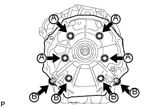 |
Установите задний переходник раздаточной коробки и закрепите его 8 болтами.
| 91. УСТАНОВИТЕ КОЖУХ АВТОМАТИЧЕСКОЙ ТРАНСМИССИИ |
Очистите резьбу болтов и картера не оставляющим осадка растворителем.
Нанесите герметик на 6 болтов.
Установите кожух трансмиссии и закрепите его 6 болтами.
| 92. УСТАНОВИТЕ ДАТЧИК ЧАСТОТЫ ВРАЩЕНИЯ SP2 |
Установите новое кольцевое уплотнение на датчик.
Установите датчик и закрепите его болтом.
| 93. УСТАНОВИТЕ ДАТЧИК ЧАСТОТЫ ВРАЩЕНИЯ NC0 |
 |
Установите новое кольцевое уплотнение на датчик.
Установите датчик частоты вращения и закрепите его болтом.
| 94. УСТАНОВИТЕ ШТУЦЕР ПАТРУБКА МАСЛЯНОГО РАДИАТОРА |
| 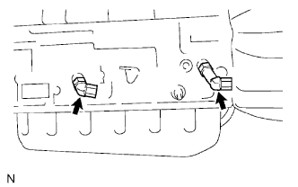 |
Покройте 2 новых кольцевых уплотнения ATF и установите по одному в каждый штуцер патрубка.
| 95. УСТАНОВИТЕ ДАТЧИК ТЕМПЕРАТУРЫ ЖИДКОСТИ ДЛЯ АВТОМАТИЧЕСКОЙ ТРАНСМИССИИ |
Покройте новое кольцевое уплотнение ATF и установите его на датчик.
Установите датчик.
| 96. УСТАНОВИТЕ ДАТЧИК ПОЛОЖЕНИЯ ПАРКИНГА / НЕЙТРАЛИ В СБОРЕ |
Установите датчик положения паркинга/нейтрали на вал рычага клапана с ручным управлением и, не затягивая, закрепите регулировочный болт.
Установите новую стопорную шайбу и гайку.
Поверните левый рычаг приводного вала до упора по часовой стрелке, а затем поверните его на 2 прорези против часовой стрелки для установки в положение N.
Совместите базовую линию нейтрали с канавкой датчика, как показано на рисунке, и затяните регулировочный болт.
| *1 | Базовая линия нейтрали |
| *2 | Канавка |
С помощью отвертки загните лепестки стопорной шайбы.
| 97. УСТАНОВИТЕ ЛЕВЫЙ РЫЧАГ ПРИВОДНОГО ВАЛА ТРАНСМИССИИ |
Установите рычаг приводного вала и закрепите его шайбой и гайкой.
| 98. УСТАНОВИТЕ ШЛАНГ САПУНА |
 |
| 99. УСТАНОВИТЕ ПРОБКУ СЛИВНОГО ОТВЕРСТИЯ |
Установите новую прокладку и пробку сливного отверстия.